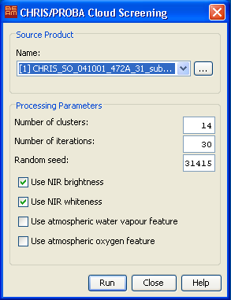
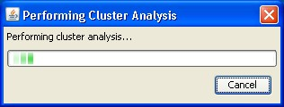
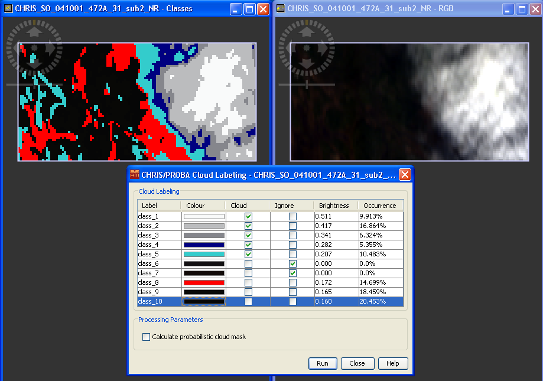

| CHRIS/Proba Cloud Screening | |
The Cloud Screening Tools is used to mask cloudy pixels in CHRIS images. The cloud masking algorithm described below helps the user to find cloudy regions in the image and provides cloud probability and abundances for each pixel instead of a single flag.
The cloud screening algorithm consists of the following steps:
The final cloud product is obtained combining the cloud probability and the cloud fraction by means of a pixel-by-pixel multiplication. That is, combining two complementary sources of information processed by independent methods: the cloud probability (obtained from the extracted features), which is close to one in cloud-like pixels and close to zero in remaining areas; and the cloud abundance or mixing (obtained from the spectra).
The Cloud Screening tool can be invoked from VISAT Tools menu by selecting the Cloud Screening... command in the CHRIS/Proba Tools submenu. It performs the cloud screening on the currently selected product, if applicable.
Selecting the Cloud Screening... command brings up the following dialog :

Name: Here the user specifies the source product. The combo box presents a list of all products open in VISAT. The user may select one of these or, by clicking on the button next to the combo box, choose a product from the file system.
Number of clusters: Use this field to specify the number of clusters. The default is 14 clusters.
Number of iterations: Use this field to specify the maximum number of iterations to be carried out. The default is 30 iterations. The cluster analysis stops when the maximum number of iterations is exceeded.
Random seed: Use this field to specify the random seed used to initialize the clustering algorithm. The default seed is 31415.
Use NIR brightness: Specifies whether or not to use the NIR brigthnness for clustering.
Use NIR whiteness: Specifies whether or not to use the NIR whiteness for clustering.
Use atmospheric water vapour feature: Specifies whether or not to use the atmospheric water vapour feature for clustering.
Use atmospheric oxygen feature: Specifies whether or not to use atmospheric oxygen feature for clustering.

While the progress dialog is shown the first three steps (TOA Reflectance Computation, Feature extraction, Image clustering) of the algorithm are performed. This might take some time. Depending on the size of the scene and on the performance of your system.
After the cluster analysis has been performed two scene images are opened. One is an RGB image of the scene the other is the resulting image of the clustering. Additionally a window is opened showing a table with an entry for each class.
Hint:
Use the Tile Evenly command in the Window menu to
display both scenes side by side.
It's also useful to synchronize both views. Use the chain symbol
in the Navigation Window
for that purpose.

Manual Cloud Labeling
Mark the classes as cloud which you can identify to be a cloud
class.
If one class contains cloud and surface samples you can reject
them (mixed clusters are rejected). Thereby the concerned samples
will be re-distributed to the classes with the second highest
probability.
You can also enable the computation of the probabilistic cloud
mask by means of spectral unmixing. This will give a better
separation between real cloud pixels and those which were wrongly
classified as cloud by the clustering.
After you're satisfied with your labeling settings you can click
on the Run button. The resulting mask is added to the
source product as band named cloud_product.
Note: The probabilistic cloud mask gives you better results in uncertain cases, but note that it can be very time consuming.
 |
 |
| Result without probabilistic cloud mask | Result with probabilistic cloud mask |
One of the main advantages of CHRIS instrument is the high configurability of its operation mode. In fact, the number of bands and their nominal wavelength allocations changes to a great extent from one mode to another. However, this advantage is a problem for the detection of clouds since the method has to take into account the number and configuration of the spectral bands for each CHRIS acquisition mode.
The cloud screening algorithm has been designed for CHRIS Modes with full spectral information (Modes 1 and 5). For example, the oxygen and water vapor atmospheric absorptions or the ice/snow absorption are only present in the spectral region registered by Modes 1 and 5. In addition, in the case of the brightness and whiteness features, the number of spectral bands available to compute them is lower for modes 2, 3, and 4. Therefore the robustness and the discrimination power of the extracted features will be poorer for these modes. In consequence, the proposed algorithm might present a poor performance for Modes 2-3-4 images in critical cloud screening situations, such as over bright surfaces (ice, snow, sand, etc) and around cloud borders or thin semitransparent clouds.
Note: In these cases, the
default options of the Compute Cloud Mask command in the
CHRIS/Proba Tools submenu could be inappropriate. If
resulting clusters are not satisfactory, the user should run
again the steps of the cloud screening algorithm with the
following options:
- To select the most appropriate extracted features as source
bands in the cluster
analysis.
- To change the number of clusters in the cluster analysis.